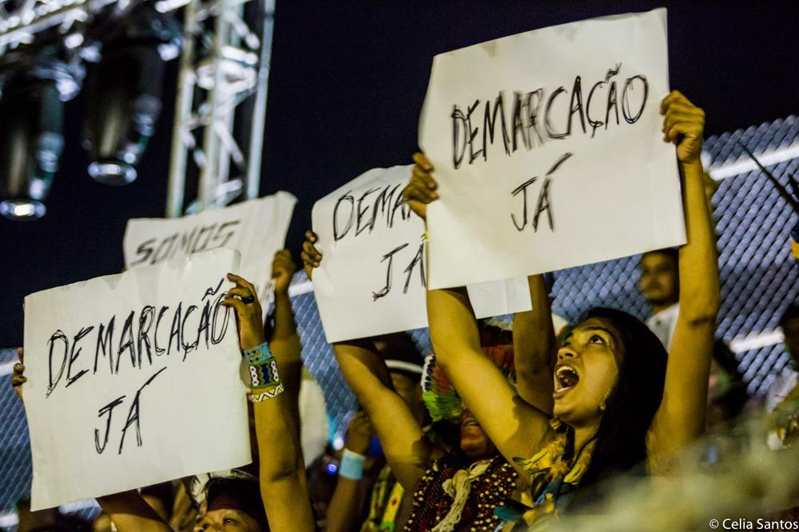
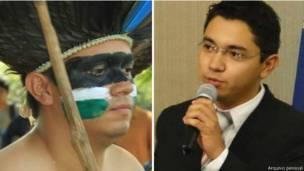

Demarcação territorial
 A Constituição de 1988,garantiu o direito a terra dos indígenas , anterior à criação do próprio Estado - reconhecendo o contexto histórico de que os índios foram os primeiros ocupantes do Brasil. Mas ainda hoje esse direito está sob ameaça.
A Constituição de 1988,garantiu o direito a terra dos indígenas , anterior à criação do próprio Estado - reconhecendo o contexto histórico de que os índios foram os primeiros ocupantes do Brasil. Mas ainda hoje esse direito está sob ameaça.
O antropólogo brasileiro Darcy Ribeiro definiu o indígena como: “Aquela parcela da população brasileira que apresenta problemas de inadaptação à sociedade brasileira, motivados pela conservação de costumes, hábitos ou meras lealdades que a vinculam a uma tradição pré-colombiana. Ou, ainda mais amplamente: índio é todo o indivíduo reconhecido como membro por uma comunidade pré-colombiana que se identifica etnicamente diversa da nacional e é considerada indígena pela população brasileira com quem está em contato.”.
segundo o IBGE, o censo de 2010 revelou que das 896 mil pessoas que se declararam ou se consideravam indígenas, 572 mil ou 63,8%, viviam na área rural e 517 mil, ou 57,5% moravam em terras indígenas oficialmente reconhecidas. Nesse contexto, percebe-se também o quão é de extrema importância o papel da terra para os indígenas. A terra dá identidade ao índio. Sendo assim, elas são fundamentais para a reprodução física e cultural desses grupos, para a manutenção de seus modos de vida tradicionais, seus saberes e suas expressões culturais, as quais fazem parte do patrimônio cultural brasileiro.
Apesar de a carta magna ter definido que até 1993 o governo brasileiro deveria demarcar todas as terras indígenas, de acordo com o critério de ocupação tradicional das terras, a determinação está longe de ser cumprida. Terra indígena demarcada significa a garantia da diversidade cultural e étnica, assim como a proteção ao patrimônio histórico e cultural brasileiro – o que caracteriza um dever da União e das Unidades Federadas, conforme disposto no Art. 24, inciso VII da Constituição. A demarcação das terras indígenas ainda garante a proteção do meio ambiente e da biodiversidade, o que também é um direito constitucional prescrito pelo art. 225 da Constituição. Agora, além de sofrer com a lentidão na efetivação de seus direitos, os povos indígenas são alvo de sistemáticos e violentos ataques.
DIREITO INDÍGENA À TERRA
As terras são o suporte da cultura e do modo de vida das 305 etnias indígenas. A demarcação das terras indígenas também beneficia, indiretamente, a sociedade, pois a garantia e a efetivação dos direitos territoriais dos povos indígenas contribuem para a construção de uma sociedade pluriétnica e multicultural.
A primeira terra indígena reconhecida legalmente no Brasil foi o Parque do Xingu, em 1961. Nos anos 1970 e 1980, houve uma grande mobilização em torno da defesa dos índios, que culminou nos direitos da Constituição de 1988. "Índio é terra, não dá para separar", dizia um cartaz da época. A partir daí, grandes áreas foram demarcadas, tentando respeitar os territórios tradicionalmente ocupados pelos índios. A maior de todas é a yanomami, com mais de 9 milhões de hectares, situada entre Roraima e o Amazonas, demarcada em 1992 depois que um genocídio perpetrado por garimpeiros mobilizou a sociedade. Mas nem todo índio ocupa seu território original. Muitos povos foram desalojados. A ocupação da terra é dinâmica, com histórico de violência e lutas desde o início da conquista pelos europeus e das primeiras entradas dos bandeirantes no interior. Mais recentemente, essas lutas passaram a envolver os interesses de empresas de vários setores.
Apesar da importância da demarcação de terras indígenas para os povos Indígenas e para a sociedade Brasileira, muito dos laudos de demarcação de terras da FUNAI estão sendo recusados pela Justiça Brasileira. Nesse contexto, o agronegócio parece ter grande influência nessa questão — diretamente ligada aos interesses de latifundiários, empresas e confederações do agronegócio — voltaram suas canetas a projetos de lei que visam extinguir direitos já adquiridos, modificar (dificultar) o processo de reconhecimento das terras indígenas e criar possibilidades para a exploração dessas áreas por não-indígenas.
O fato é que a demarcação de terras indígenas tem gerado muita discussão e ganhado maior relevância no cenário político nacional principalmente pelo crescimento do agronegócio. Para resguardar a sobrevivência dos povos indígenas e suas tradições, é necessário garantir a segurança deles, sobretudo no sentido de proteger suas áreas demarcadas e realizar, o mais rápido possível, a demarcação daquelas que necessitam de tal para a manutenção segura de suas práticas. A expectativa é a de que, nos próximos anos, mais terras sejam demarcadas, o que depende não só do poder público, mas também da articulação dos movimentos sociais e, claro, das lideranças indígenas no sentido de lutarem pela sua soberania territorial.
OS CONFLITOS ACERCA DA DEMARCAÇÃO
Fundação Nacional do Índio – FUNAI é o órgão indigenista oficial do Estado brasileiro. Criada por meio da Lei nº 5.371, de 5 de dezembro de 1967, vinculada ao Ministério da Justiça, é a coordenadora e principal executora da política indigenista do Governo Federal. Sua missão institucional é proteger e promover os direitos dos povos indígenas no Brasil.
Cabe à FUNAI promover estudos de identificação e delimitação, demarcação, regularização fundiária e registro das terras tradicionalmente ocupadas pelos povos indígenas, além de monitorar e fiscalizar as terras indígenas. A atuação da FUNAI está orientada por diversos princípios, dentre os quais se destaca o reconhecimento da organização social, costumes, línguas, crenças e tradições dos povos indígenas, buscando o alcance da plena autonomia e autodeterminação dos povos indígenas no Brasil, contribuindo para a consolidação do Estado democrático e pluriétnico.
O conceito de quais são as terras tradicionalmente ocupadas pelos índios consta no artigo 231 da Constituição Federal de 1988. Em seu primeiro parágrafo está estipulado que terras indígenas são aquelas: “por eles “os índios” habitadas em caráter permanente, as utilizadas para suas atividades produtivas, as imprescindíveis à preservação dos recursos ambientais necessários a seu bem-estar e as necessárias a sua reprodução física e cultural, segundo seus usos, costumes e tradições. Sendo assim, os indígenas detêm sobre essas terras a posse permanente e o uso exclusivo das riquezas do solo, dos rios e dos lagos existentes, ainda conforme o artigo 231.
No início do século XX, o Brasil decidiu expandir suas fronteiras agrícolas, fortalecendo a sua posição de país dependente, exportador de matérias primas. Então foi necessário avançar pelo interior, abrir caminhos para a pecuária e a agricultura. Mas, esse legado de humanidade se perdeu no tempo. "Pacificados," os indígenas chamados a se "civilizar", a entrar no ritmo da sociedade branca, foram perdendo sua identidade, suas raízes, sua cultura. Outros, renitentes, foram alojados em reservas, como se fossem bichos exóticos, com suas terras diminuídas e tuteladas pelo Estado. O território "pacificado" ganhou escrituras, donos, cercas. E aos verdadeiros donos do território restou a nostalgia de um tempo em que eles podiam viver à sua maneira.
Agora, durante o mais novo ciclo de desenvolvimento dependente brasileiro, Os ruralistas querem mais terras e não estão dispostos a permitir que - sobre suas perspectivas, desconhecem o verdadeiro significado de uma pessoa pertencer a uma etnia indígena -- "seres" (atribuídos por eles) vivam sua cultura de equilíbrio ambiental e desenvolvimento fora do ritmo capitalismo. Uma contradição pode ser extraída, querem tirar o direito da demarcação de terras, mas esses grandes proprietários de terras são os que tem um olhar de capitalizar os saberes indígenas. Nesse contexto, o governo federal se curva aos interesses da classe dominante e emprega a força bruta para atacar manifestações legítimas dos povos indígenas e das gentes que apoiam a causa originária. Nesse sentido, tramitam no Congresso e são discutidas em outras esferas governamentais várias medidas cuja extinção é uma das principais reivindicações do movimento indígena nacional.
Portanto, vimos que o processo de demarcação é um meio administrativo para limitar o território tradicionalmente ocupado por uma ou mais etnias. Conclui-se que a demarcação de terras indígenas e de suma importância para os povos indígenas e para a sociedade brasileira como um todo. Outrossim, deve-se preservar o Direito daqueles que eram os “donos da terra” antes mesmo dos portugueses aqui chegarem. A demarcação de terras indígenas deve ser tratada não como um favor, mas sim como um direito dos povos originários do Brasil. Respeitar os Direitos dos indígenas é respeitar a História do Brasil. Tudo isso em cumprimento ao que é determinado pelo artigo 231 da Constituição Federal.
BUSCA POR RECONHECIMENTO DA IDENTIDADE INDÍGENA
É nessa identificação que um grupo determinado busca o reconhecimento de sua presença histórica em determinada área e, ainda, o reconhecimento da identidade indígena. Ter seus territórios demarcados é um direito que os povos indígenas conquistaram após muitos anos de lutas e resistências. A Constituição expressa os direitos à diferença, a ser diferente da sociedade nacional hegemônica, de ter seus costumes e suas tradições reconhecidos como legítimos e respeitados pelo Estado Nacional.
Foi somente com a Constituição de 1988 que ocorreram mudanças importantes na política indígena nacional, permitindo o abandono de uma visão em que os índios estavam em meio a um processo de perda de seus costumes e tradições, como sendo uma categoria transitória, fadada ao desaparecimento, já que eles deveriam perder seus costumes e tradições e ser integrados à sociedade nacional. Os reflexos de tal política permanecem na atualidade, onde o que se vê são situações de confinamento territorial e restrições diversas aos indígenas.
Além de abolir essa ideia, a Constituição de 1988 também demonstrou avanço ao considerar que os direitos dos povos indígenas às terras constituem direitos originários. Ou seja, reconheceu-se que esse direito é anterior à criação do próprio Estado, pois os índios foram os primeiros ocupantes do Brasil. Portanto, vemos que a partir de 1988 foi estabelecida uma nova relação entre governo, sociedade e povos originários, pautada no respeito e reconhecimento jurídico do direito à diferença.

Luiz Henrique Eloy Amado - o índio terena - que se formou em Direito. Um dos poucos advogados no Brasil dedicado à demarcação e à reintegração de terras indígenas. Um símbolo da resistência enfrentada por lideranças jovens dentro e fora de suas comunidades.
Conclui-se que o reconhecimento da identidade indígena e de suma importância para a sociedade brasileira como um todo, pois a demarcação representa a busca pelo reconhecimento da organização social, costumes, línguas, crenças e tradições dos povos indígenas, buscando o alcance da plena autonomia e autodeterminação dos povos indígenas no Brasil e a preservação da cultura.
Fontes:
https://bbc.in/2DOEXg9
https://bit.ly/2Q9V2TC
https://bit.ly/2DAvxnE
https://bit.ly/2S3J8Yx
https://abr.ai/2DU6fBU
https://bit.ly/2A7N1Eo
https://bit.ly/2QWcXKl
https://bit.ly/2S736BP
https://bit.ly/1MD5irm
https://bit.ly/2DAxS1U
https://bit.ly/2KrNKW4
https://bit.ly/2TyOXPa
https://bit.ly/2DBfnKE
https://glo.bo/2goMtm0